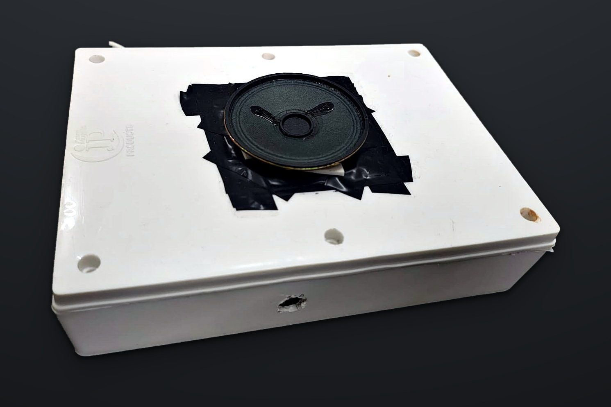

Speaks road signs
Reads 20 common Indian road signs, from speed limits to school zones and speed breakers, and says each one once.
“Speed limit 50.”
CARA watches the road through a small camera and speaks the signs, warns you when you are over the limit, reads out who is messaging, and sums up each drive. Your eyes stay on the road.

Our 3D printer broke after its first print, so this prototype lives in a general-purpose electrical box that we cut to fit. The electronics inside are exactly those of the final design.
Reads 20 common Indian road signs, from speed limits to school zones and speed breakers, and says each one once.
Uses your phone's GPS speed. More than 5 km/h over the last limit for 3 seconds, and it says “Slow down. Speed limit 50.”
WhatsApp, text messages and calls from the apps you choose, spoken by name, so you never look down at the phone.
When you park, it speaks the distance, time and warnings, with one remark from a small AI inside the unit. The route appears on a map in the app.
Everything the unit tells you is spoken in a clear, natural voice, one message at a time and the most urgent first: overspeed, then road signs, then calls, then messages.
Tap a line to hear it in your browser's voice. The unit itself uses a natural British-English female voice that runs on the device, without the internet.
Everything runs inside the unit, on a Raspberry Pi 3B+. Each feature is its own small program, and they talk to each other through a shared message board, so one can restart without stopping the others.
While you drive, in a fraction of a second
When you park, in a few seconds
Five pictures in a row. When three of them agree, the unit speaks; one blurry picture is not enough.
Plug the unit's USB cable into a power bank. After about a minute it says “Self test passed. System ready.”
Download the Driver Companion app below and allow the four permissions it asks for.
Hold the PAIR button for 5 seconds, tap Pair in the app and type the code the unit speaks.
Place the unit on the dashboard facing the road. Press TRIP before you set off (“Trip started.”) and again when you park (“Trip ended.”).
The same video opens from the code on the Quick Start Guide.
Installing the app: open the downloaded file and allow installs from your browser if Android asks. The app is not in the Play Store yet, so Play Protect may warn you; tap More details, then Install anyway.
| Controller | Raspberry Pi 3B+, quad-core 1.4 GHz, 1 GB |
|---|---|
| Camera | 5 MP module; signs read at 640 × 480, 15 frames a second |
| Sign model | Our own small neural network, 20 classes from the IRC:67 sign code |
| Speed | Your phone's GPS, sent over Bluetooth once a second |
| Sound | 3 W speaker, digital class-D amplifier, three volume levels |
| Voice | Natural female voice generated on the unit |
| Trip remark | Qwen2.5 0.5B language model, on the unit |
| Phone link | Bluetooth Low Energy, paired with a spoken 6-digit code |
| Power | 5 V USB, from a power bank or a car USB charger |
| App | Android 8.0 or newer; keeps your last 200 trips |
CARA is a driver aid. It can miss or misread a sign, especially at night, in rain or in glare. The road signs and your own attention always come first.
What works today, and what we plan to add next.
Tested on the real unit with the phone's GPS.
A built-in receiver, so speed works without the phone.
Measures harsh braking and acceleration, and spots potholes.
Trips start and end with the car key instead of the TRIP button.
New signs and software sent through the app.
A 3D-printed case with built-in buttons, once the lab printer is repaired.
Electronic Product Development (Sessional), School of Electronics Engineering, KIIT Deemed to be University, Bhubaneswar.